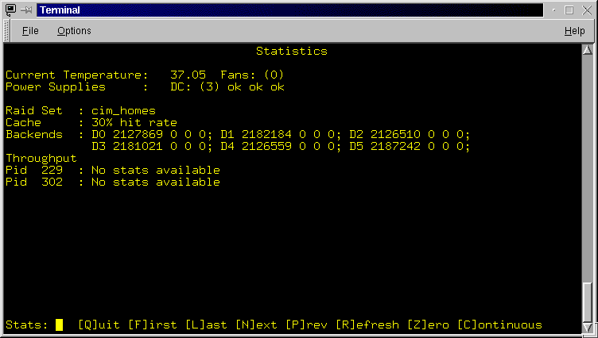

The next set of lines provide a summary of the Raid Sets configured on the RaidRunner. The summary includes the raid set name, it's type, it's size, the amount of cache allocated to it and a comma separated list of it's backends. See rconf in the "Advanced Topics" section for a full description of the above.
Figure 3.6: The General Screen. The options accessible from here allow you to view information on the attached devices (SCSI hard drives and tape units), browse the system logs, and examine environment variables.
Figure 3.9: The system logger messages screen. An example message is shown, there is one message per screen.
